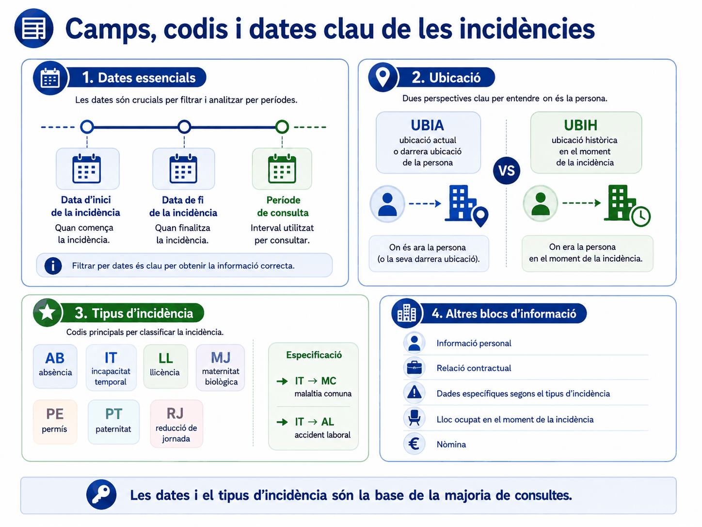
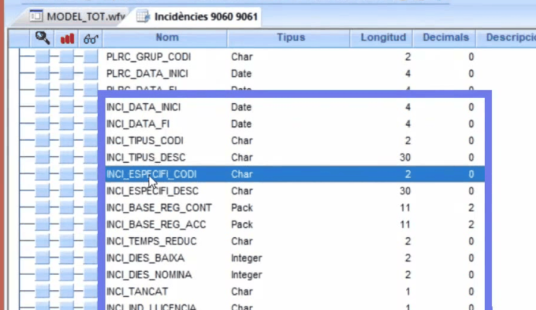
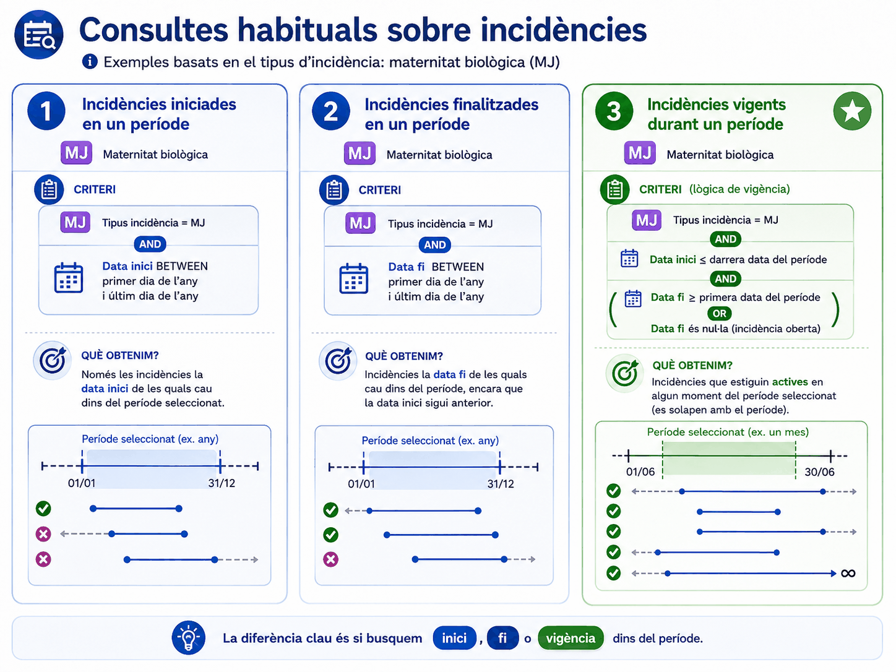
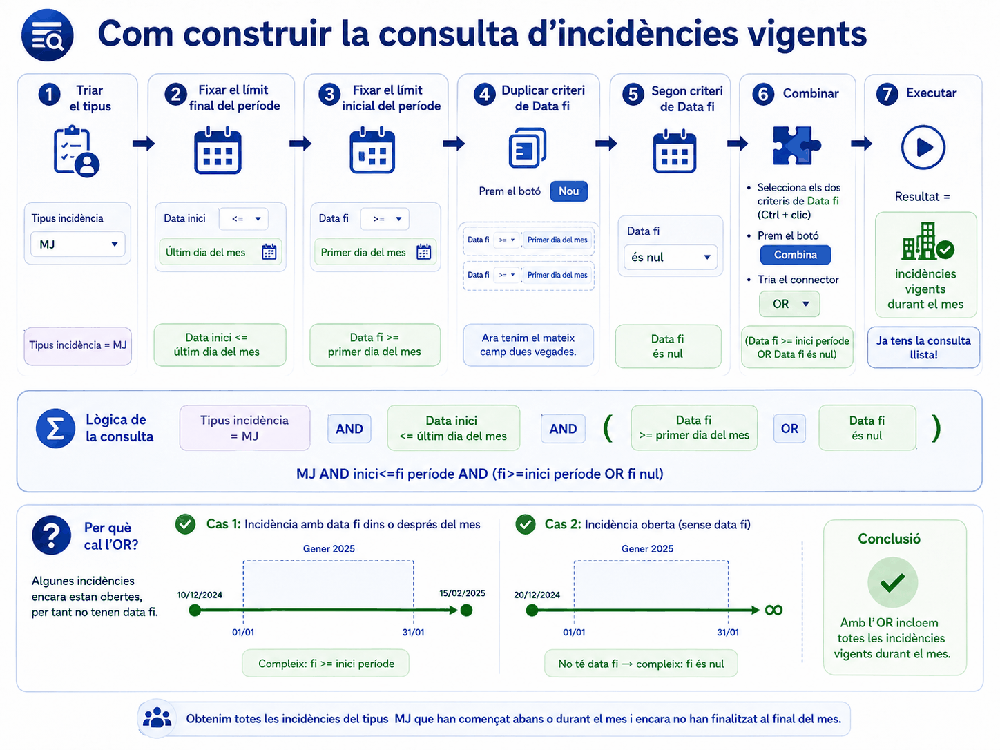

Apartat 1Les dues taules
Totes dues contenen incidències vigents i les finalitzades durant l'any actual i l'anterior. Totes dues tenen els mateixos camps. El que canvia és l'univers: quines files hi ha a dins.
| Taula | Conté | Feu-la servir per estudiar |
|---|---|---|
| WAIV9060 | Les incidències iniciades en llocs del vostre àmbit, independentment d'on estigui adscrita la persona ara. | Els llocs: què passa a la vostra plantilla. |
| WAIV9061 | Les incidències de les persones que ara ocupen un lloc al vostre àmbit, independentment d'on es va iniciar la incidència. | Les persones: què els ha passat, fos on fos. |
És la mateixa de la unitat 00: la que acaba en 0 segueix el lloc, la que acaba en 1 segueix la persona. I funciona igual per a la parella 9030 i 9031 de la unitat següent.
Com que els camps són idèntics, una consulta feta sobre la taula equivocada s'executa perfectament i torna dades versemblants. No hi ha cap senyal d'error. L'única manera de detectar-ho és haver triat la taula conscientment.
Aquesta taula es lliga amb la de persones pel camp
PERS_NIF, que hi surt a totes dues. Les incidències no
porten ni el departament ni la unitat orgànica de qui les té: si les
voleu al costat, cal enllaçar amb WAIV9010_PERSONA pel
NIF. I compte amb el sentit del recompte: una persona pot tenir
diverses incidències, de manera que comptar files no és comptar gent.
Apartat 2Què hi ha a dins
- Contingut
- Incapacitats temporals, absències, permisos, llicències i reduccions de jornada, vigents i les finalitzades l'any actual o l'anterior.
- Clau
- Cap. Registres múltiples: el NIF es repeteix tantes vegades com incidències hagi tingut la persona.
- Vigència
- Dades actuals i històriques.
- Càrrega
- Diària.
Les dues ubicacions
Aquesta taula porta dos jocs de camps d'ubicació, i confondre'ls canvia el resultat:
UBIA
Ubicació actual de la persona, o l'última si ja no està en actiu.
UBIH
Ubicació històrica: on treballava exactament en el moment en què es va produir la incidència.
Per a un estudi d'absentisme per unitat, la bona és
UBIH: voleu saber on va passar. Si feu servir
UBIA, atribuireu la baixa a la unitat on la persona treballa
avui, que pot no tenir res a veure.
La taula porta també dades personals, de relació contractual, del lloc que ocupava la persona en aquell moment, i d'afectació a la nòmina.
A banda de les dates i el tipus, la taula porta dades personals de qui té la incidència: l'edat, el sexe i les dades de la seva relació contractual. I, segons quin sigui el tipus, s'omplen uns camps o uns altres: en una maternitat o una paternitat hi consta la data de naixement del fill, i en una adopció el moment en què es va produir. Per això la taula sembla plena de camps buits: no ho està, és que cada tipus n'informa els seus.
Apartat 3Els codis d'incidència
La codificació completa és al GIP, però aquests set són els que cal recordar:
| Codi | Què és |
|---|---|
| AB | Absència |
| IT | Incapacitat temporal |
| LL | Llicència |
| MJ | Maternitat biològica |
| PE | Permís |
| PT | Paternitat |
| RJ | Reducció de jornada |
L'especificació
Un segon camp concreta el subtipus. Dins d'una incapacitat temporal
(IT), l'especificació pot ser MC de malaltia comuna
o AL d'accident laboral, que són les més freqüents.
Segons el tipus, hi haurà camps informats o no: en una maternitat hi trobareu la data de naixement o el moment de l'adopció; en una incapacitat, no.


INCI_DATA_INICI, INCI_DATA_FI, el tipus
partit en INCI_TIPUS_CODI i _DESC, i el
subtipus en INCI_ESPECIFI_CODI i _DESC.
Fixeu-vos en la pestanya de dalt: la consulta es diu
Incidències 9060 9061, perquè les dues taules tenen els
mateixos camps i el que canvia és l'univers.
Videotutorial 13 de l'EAPC, minut 3:00.
Els noms exactes: el tipus va partit en
INCI_TIPUS_CODI i INCI_TIPUS_DESC, i el
subtipus en INCI_ESPECIFI_CODI i
INCI_ESPECIFI_DESC. Filtreu sempre pels de codi. I les
dues ubicacions són UBIA_UN_ORGAN_NOM, la d'ara, i
UBIH_UN_ORGAN_NOM, la del moment de la incidència: si
algú ha canviat de destinació, no són la mateixa, i triar-ne una o
l'altra canvia el recompte per unitat.
Apartat 4Tres preguntes sobre dates
Aquí arriba el nucli de la unitat. "Les incidències del setembre" pot voler dir tres coses diferents, i cadascuna dóna una xifra diferent.
Iniciades
Les que van començar dins del període. Deixa fora les que venien d'abans i encara duraven.
Finalitzades
Les que van acabar dins del període, encara que comencessin l'any anterior.
Vigents
Les que van tocar el període, tant se val quan van començar o acabar. És la que costa de construir.
Quan algú demana "les baixes del setembre", normalment vol dir vigents, però gairebé mai ho diu. Les tres respostes són correctes i les tres són diferents. Val la pena confirmar-ho abans, i escriure al costat de la xifra quina heu calculat.

Apartat 5Iniciades en un període
La més senzilla. Un sol camp i l'operador Entre.
Seleccioneu les dues dates per veure-les al resultat. Totes les dates d'inici han de caure dins del període. És la manera més ràpida de validar que el criteri s'ha aplicat.
Apartat 6Finalitzades en un període
Exactament igual, canviant de camp. Traieu el criteri anterior i poseu-lo sobre la data de fi.
El nombre de registres serà diferent del de la consulta anterior. En mirar el resultat veureu incidències que van començar l'any anterior: és correcte, perquè el que heu demanat és quan van acabar.
Apartat 7Vigents en un període
Aquesta és la difícil, i val la pena entendre-la abans de construir-la. Una incidència és vigent en un període si es solapa amb ell, encara que comencés abans o acabi després.
Dos períodes se solapen si cadascun comença abans que l'altre
acabi. Traduït a la nostra consulta, amb el període d'estudi del
01/09 al 30/09:
- la data d'inici de la incidència ha de ser anterior o igual al darrer dia del període;
- la data de fi ha de ser posterior o igual al primer dia del període;
- o bé la data de fi ha de ser nul·la, perquè la incidència encara està oberta.
Sense combinar les dues condicions de data de fi, el programa les uneix amb AND i us demana que la data de fi sigui posterior al dia 1 i alhora nul·la, cosa impossible. És la mateixa trampa de la unitat 7, amb un ingredient nou: aquí les dues condicions són sobre el mateix camp.
Perquè una incidència oberta no té data de fi. I recordeu la unitat 9: És nul sí que funciona aquí, perquè és un camp de data. Aquest és el cas en què l'operador serveix de veritat.

Apartat 8Construir-ho al programa
Necessiteu dues condicions sobre el mateix camp, i això demana el botó que vam veure a la unitat 6 i que fins ara no havíem fet servir.
-
La data d'inici
Criteri sobre
DATA_INICIamb l'operador<=i el darrer dia del període. -
La primera condició de la data de fi
Criteri sobre
DATA_FIamb>=i el primer dia del període. -
Dupliqueu el camp amb Nou
Situeu-vos sobre el criteri de la data de fi i premeu Nou. Es duplica la línia perquè hi pugueu posar una segona condició.
-
Poseu-hi És nul
A la línia nova, canvieu l'operador a És nul.
-
Combineu-les i canvieu a OR
Amb Ctrl, seleccioneu les dues línies de data de fi. Premeu Combina i canvieu el connector de dins a or.
-
Executeu i comproveu
Al panell Camps el parèntesi ha d'abraçar només les dues línies de data de fi, i la data d'inici ha de quedar-ne fora.
Al panell de criteris veureu les dates escrites en format intern, del tipus
BETWEEN {d '2024-09-01'} AND {d '2024-09-30'}. Les caixes de
valor les mostren com 01/09/2024, però per dins són ISO. No us
alarmeu: és correcte.
Aquí hi ha el gest concret que costa de descobrir sol. Per posar dos criteris sobre el mateix camp de data, no cal buscar-lo dos cops a la llista: situeu-vos sobre el criteri que ja teniu i premeu el botó Nou, que el duplica tal com està. Al segon hi canvieu l'operador a És nul. Després, amb la tecla Control premuda, seleccioneu els dos criteris, els combinem amb Combina i canvieu el connector a or. Sense el parèntesi, l'and dels altres criteris no s'aplicaria a la segona condició.
Apartat 9Errors freqüents
El que passa
La consulta de vigents torna zero.
Em falten les baixes que segueixen obertes.
Els números no quadren amb els de l'any passat.
L'absentisme surt atribuït a la unitat equivocada.
73 incidències, però la meva cap en comptava 48.
El que passa de veritat
No heu combinat les dues condicions de data de fi. Estan unides per AND i és impossible complir-les.
Us falta la condició És nul a la data de fi.
Compareu iniciades amb vigents. Són preguntes diferents.
Heu filtrat per UBIA en comptes de UBIH.
Ella comptava persones i vosaltres files. Unitats 10 i 12.
Apartat 10Exercicis
Les tres xifres del setembre
ReprodueixSobre WAIV9060, calculeu les tres xifres per al mes de setembre:
- Incidències iniciades al setembre.
- Incidències finalitzades al setembre.
- Incidències vigents al setembre.
Comprovació
73 incidències vigents
És la consulta model 3 de la unitat 00. La xifra de vigents ha de ser la més gran de les tres: inclou les que van començar abans i les que van acabar després. Si no és així, reviseu el parèntesi.
Treu el parèntesi
TrencaAmb la consulta de vigents muntada, premeu No combinis per desfer el parèntesi i executeu.
- Quants registres surten?
- Per què?
- I si en comptes de treure el parèntesi, canvieu l'or de dins per un and?
Què hauria d'haver passat
1 i 2. Sense parèntesi, el programa agrupa els dos primers criteris amb AND i deixa el És nul penjant de l'OR. Resultat: totes les incidències obertes de la taula, siguin del setembre o no. La xifra puja i és falsa.
3. Amb AND a dins del parèntesi, demaneu una data de fi que sigui posterior al dia 1 i nul·la alhora. Zero registres.
Els dos errors són el mateix de la unitat 7 vistos des de dos angles: un infla i l'altre buida. El perillós és el primer.
L'encàrrec ambigu
ResolUs arriba aquest correu:
"Per al comitè de seguretat i salut necessito les incapacitats temporals per accident laboral que hi va haver al nostre servei el trimestre passat, i quanta gent diferent hi ha implicada."
Digueu quina taula trieu, quins criteris poseu i quin comptador feu servir. Assenyaleu també què hi ha d'ambigu a l'encàrrec.
Solució
Taula: depèn, i s'ha de preguntar.
- Si l'estudi és sobre el servei com a lloc de treball:
WAIV9060. - Si és sobre la gent que hi ha ara:
WAIV9061. - Per a un comitè de seguretat i salut, normalment interessa on va passar:
WAIV9060, i ambUBIH.
Criteris:
Comptadors: dos, i cal donar-los tots dos.
- Recompte de registres: quants processos hi ha hagut.
- Distinct Agregats sobre el NIF: quanta gent diferent.
L'ambigüitat: "que hi va haver el trimestre passat" no diu si són iniciades o vigents. Per a prevenció de riscos la bona és vigents, perquè una baixa llarga que ve d'abans també és un accident que afecta el servei. Digueu-ho explícitament al costat de la xifra.
Apartat 11Llista de comprovació
- Explicar què separa
WAIV9060deWAIV9061. - Aplicar la regla del 0 i l'1 per triar entre elles.
- Explicar per què una consulta sobre la taula equivocada no dóna cap error.
- Distingir
UBIAd'UBIHi saber quan cal cadascuna. - Recordar els set codis d'incidència.
- Enunciar les tres preguntes possibles sobre un període.
- Construir la consulta d'iniciades i la de finalitzades.
- Explicar la regla del solapament amb les seves tres condicions.
- Fer servir el botó Nou per posar dues condicions al mateix camp.
- Combinar les dues condicions de data de fi i canviar-hi el connector a or.
- Justificar per què aquí És nul sí que funciona.
- Comprovar al panell Camps que el parèntesi abraça el que toca.
La mateixa lògica de dates, però aplicada dues vegades a la mateixa consulta. La unitat 14 és la més exigent del curs i és l'única manera de saber com era un lloc de treball en una data del passat.